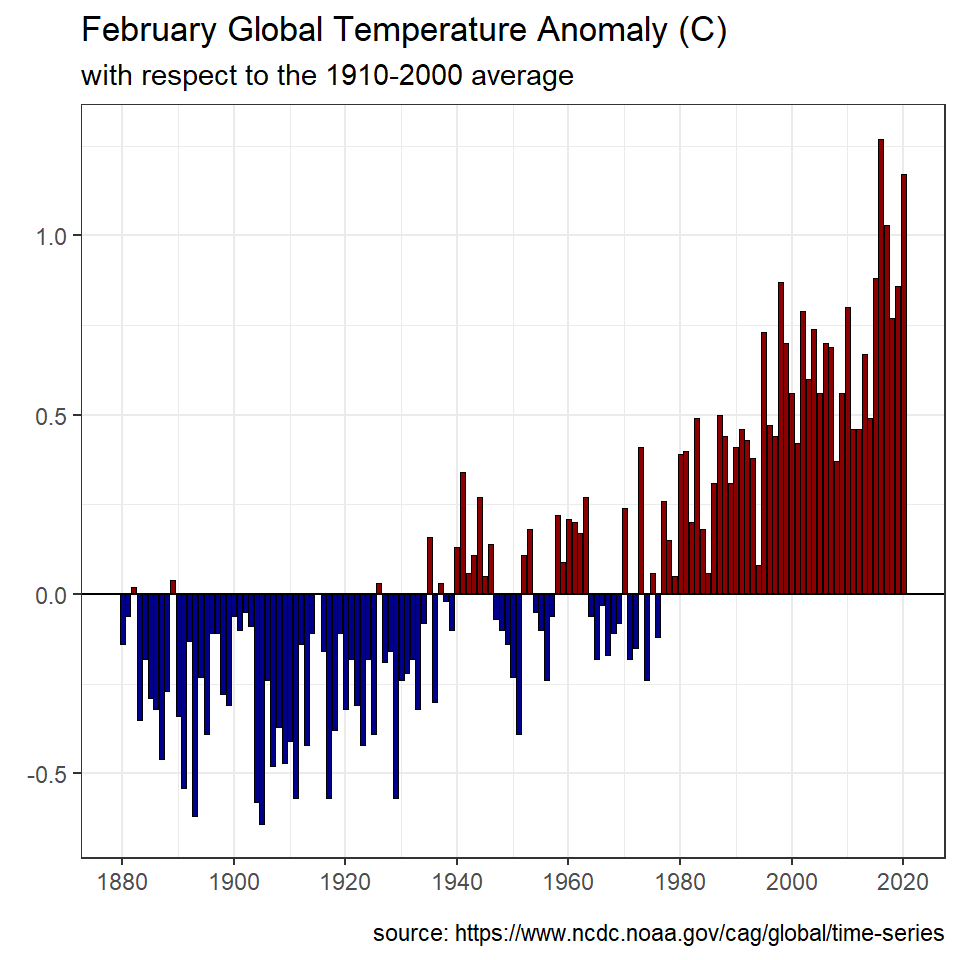

Make the plot shown under “BONUS - Annual Temperature Anomaly 5” on this page, but add an appropriate title, subtitle, and caption (and decide if it is worth keeping the x- and y-axis labels).
Make the plot shown under "State and No Good Deer Hunting 1 on this page. I have since learned that these data were preliminary and that results from Minnesota hard largely not been entered into the database. Add a note on the inside of the plot that explains this. You should include an arrow that appropriately points to the low bar for Minnesota.
Legends for very simple plot scan sometimes waste space and be distracting. Such an example may be the legend for the plot shown under “Total Annual Harvest by County and Year” on this page. One alternative is to place a small label near the lines in the plot, as shown below. Construct ggplot2 code to match this graph.
